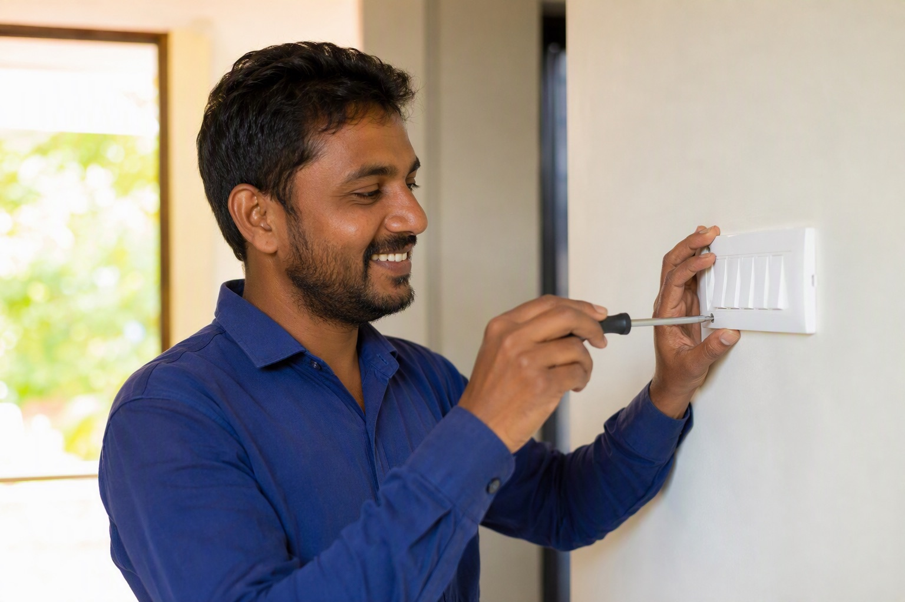

Wiring for ACs and Geysers: Wire Size, MCB Rating and Common Mistakes

Air conditioners and geysers are the two highest-load appliances in an Indian home and the two most often wired incorrectly, because both are frequently added after the house is built.
Wire size and protection by appliance
| Appliance | Approx load | Wire size | MCB |
|---|---|---|---|
| 1 ton AC | ~1,000–1,200 W | 2.5 sq mm (4.0 for long runs) | 16A, Curve C |
| 1.5 ton AC | ~1,500–1,800 W | 4.0 sq mm | 20A, Curve C |
| 2 ton AC | ~2,000–2,400 W | 4.0 sq mm | 20A / 25A, Curve C |
| Geyser 15L / 2000W | ~2,000 W | 2.5 sq mm | 16A, Curve C |
| Geyser 25L / 3000W | ~3,000 W | 4.0 sq mm | 20A, Curve C |
| Instant geyser 4500W | ~4,500 W | 4.0 sq mm | 25A, Curve C |
Sizes assume normal run lengths. Runs beyond about 20 metres from the board need the next size up to keep voltage drop within limits — check with the voltage drop calculator.
Every AC and geyser needs its own circuit
Not a spur off the bedroom socket circuit — a dedicated run from the distribution board with its own MCB. Three reasons: the load is too high to share, a fault on a shared circuit takes out the whole room, and an individual MCB lets you isolate the appliance for service without killing anything else. This is also why adding an AC to an existing house properly means running a new cable, not tapping the nearest 16A socket.
Curve C, not Curve B
Compressor motors draw a large inrush current for a fraction of a second at startup. A Curve B breaker sees that as a fault and trips. Curve C tolerates the inrush while still protecting against a genuine overload. Nuisance tripping every time the AC starts is almost always a curve problem, and the correct fix is the right curve, never a higher rating.
RCBO on the geyser
A geyser is an electric heating element immersed in water in a wet room — which is the highest shock-risk appliance in a house. Element leakage is a common failure and often develops slowly. An RCBO on the geyser circuit gives it both overload and leakage protection independently, so a failing element trips its own circuit instead of the whole-house RCCB, and you find out early rather than by touching a tap.
Stabilisers and the socket question
- Modern inverter ACs mostly have wide input voltage tolerance and are marketed as stabiliser-free. In areas with genuinely unstable supply a stabiliser is still worth having — check the manufacturer's stated voltage range against local conditions.
- If a stabiliser is used, it needs its own point at an accessible height, wired on the same dedicated circuit.
- Use a 16A or 20A point, not a 6A socket with an adapter. Adapters on high-load appliances are the single most common cause of burnt sockets in Indian homes.
- Position the AC point close to the indoor unit, high on the wall, so the appliance lead is not run across the room.
The five mistakes we see most
- ACs and geysers run on 2.5 sq mm because "it works". It works until the cable is warm all summer and its insulation ages a decade in two years.
- A higher MCB fitted to stop tripping, which removes the protection instead of fixing the cause.
- No earth run to the appliance point, especially on retrofit circuits.
- Copper joints inside the wall on a retrofitted AC line, made in a junction box that later gets plastered over.
- Adding a second AC to a circuit sized for one. Two 1.5 ton units on a single 20A circuit is an overload waiting for a hot afternoon.
Size your own circuits with the wire size calculator and the MCB selector.
Send your list on WhatsApp for an exact quote within 60 minutes. Approximate ranges on this page are for planning; WhatsApp 88676 76700 for today's firm rate, with no pressure to buy.
Frequently asked questions
What wire size is needed for a 1.5 ton AC?
What wire size does a geyser need?
Why does my AC trip the MCB every time it starts?
Does an air conditioner need a dedicated circuit?
Should a geyser have an RCBO?
Do inverter ACs need a stabiliser?
Ready to order for your home?
Upload your wiring list for an instant quote — 100% original material, free next-day delivery across Bangalore.